Turniej Szachowy – dokumentacja
Aplikacja webowa do prowadzenia szkolnego turnieju szachowego: lista uczestników, losowanie par metodą Buergera, wpisywanie wyników i klasyfikacja. Powstała dla XII LO im. H. Sienkiewicza w Warszawie (nazwa szkoły jest wpisana na stałe w interfejsie).
1. Do czego to służy
Organizator dodaje uczestników w formacie imie_klasa, generuje pary na kolejną rundę i wpisuje wyniki partii. Aplikacja liczy punkty i pokazuje klasyfikację. Uczeń lub rodzic wchodzi jako gość, bez konta, i widzi pary, wyniki i klasyfikację tylko do odczytu.
Są trzy role: gość (tylko podgląd), nauczyciel (dodaje uczestników, generuje pary, wpisuje wyniki) i superadmin (dodatkowo usuwa uczestników, resetuje turniej i zakłada konta). Dane trzyma Supabase (Postgres z uprawnieniami na poziomie wierszy), a frontend działa w całości w przeglądarce.
2. Jak to wygląda
Zrzuty zrobiłem z kodu z gałęzi main, uruchomionego lokalnie na prawdziwym stosie Supabase (Postgres z schema.sql i 001_integrity.sql, Supabase Auth, PostgREST z włączonym RLS), bez żadnej atrapy. Dane to osiem fikcyjnych osób, a konta demonstracyjne istniały tylko w tej lokalnej bazie. Uczestników, pary i wyniki wpisałem przez interfejs, tak jak zrobiłby to nauczyciel. Pominąłem zrzut wysyłki formularza kontaktowego i tworzenia konta (patrz „Ograniczenia”). Dwa symbole przy przyciskach backupu wyświetlają się jako puste ramki, bo przeglądarka bez interfejsu nie miała do nich glifów.
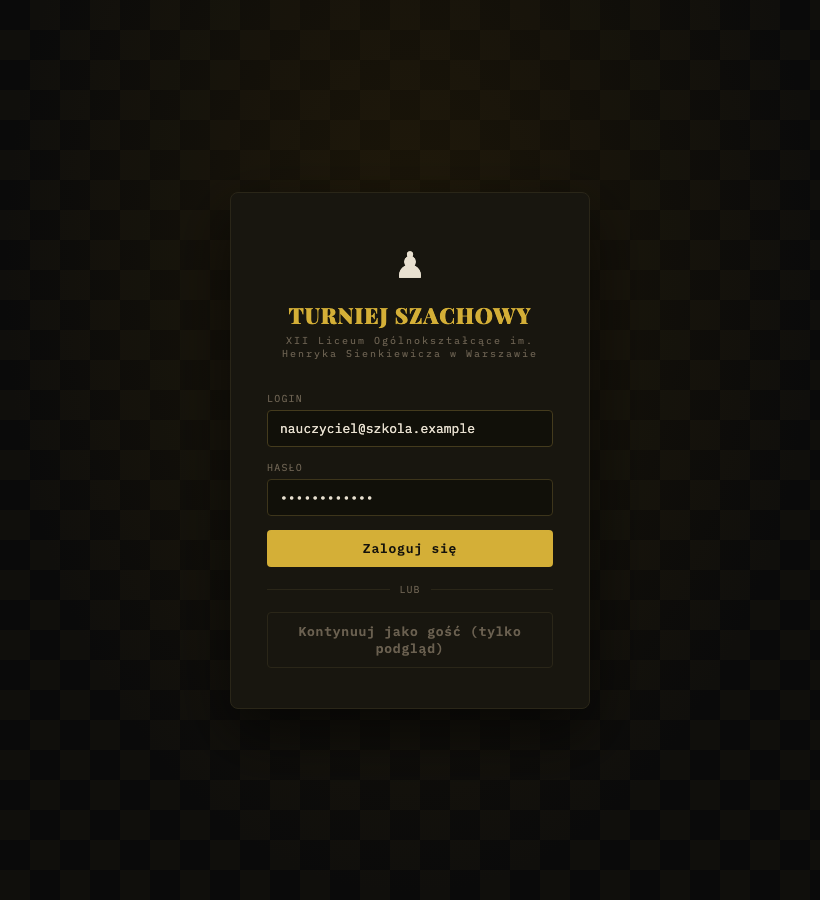
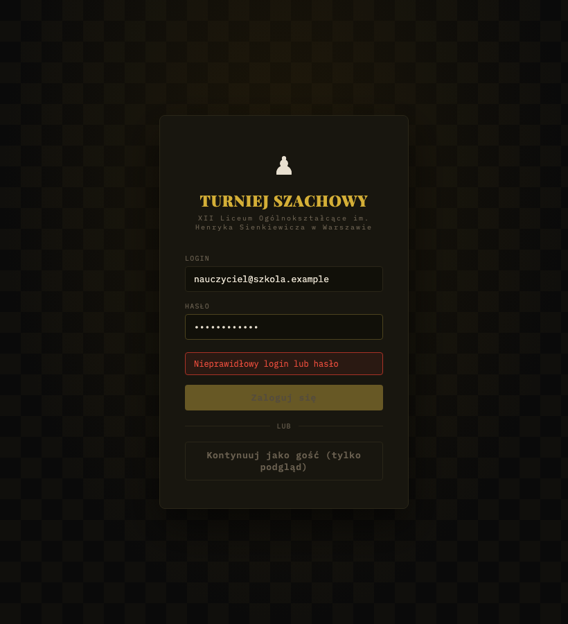
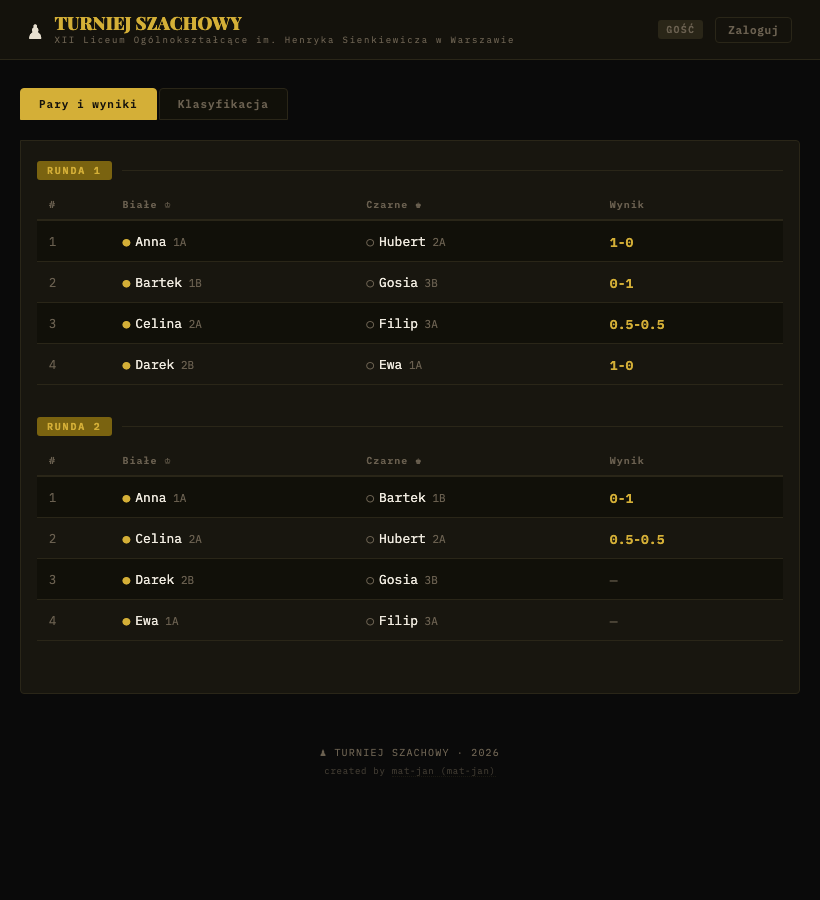
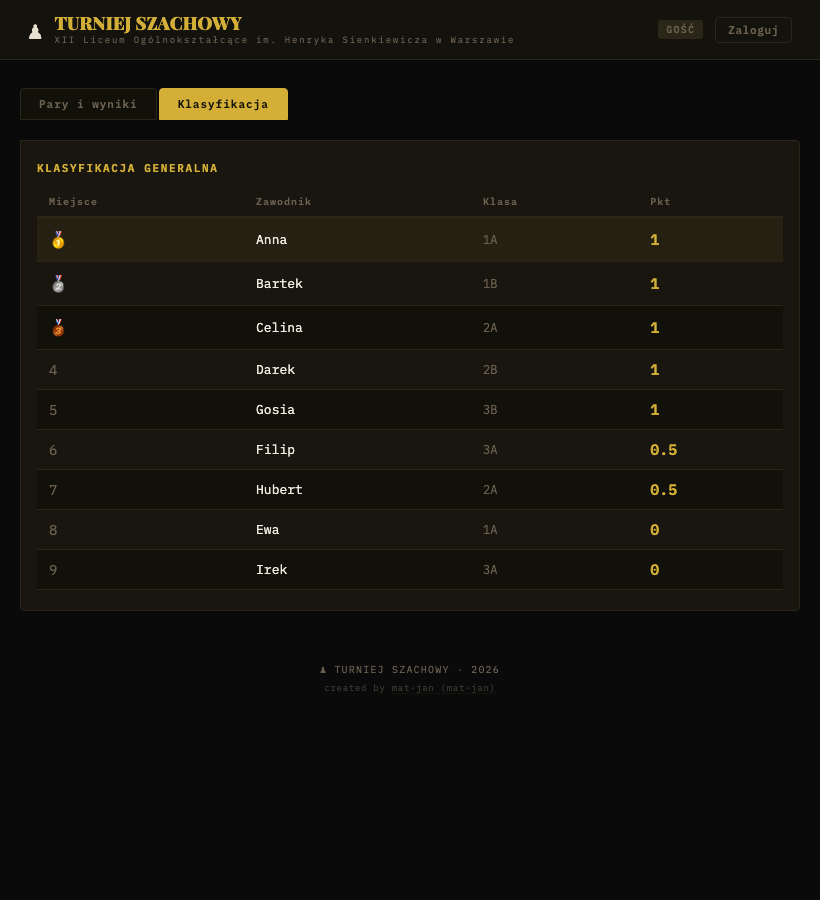
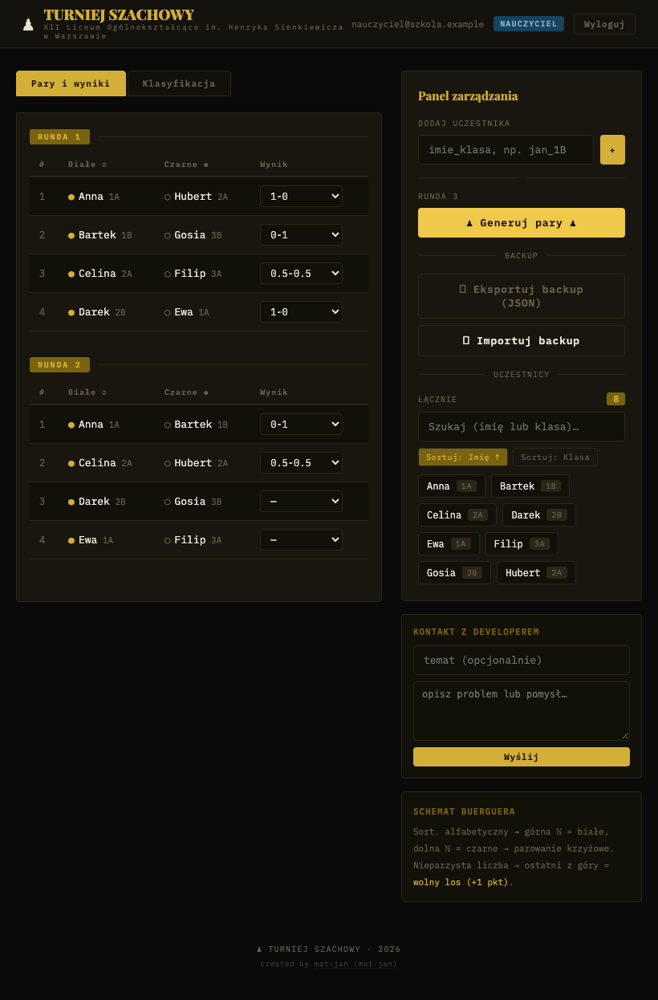
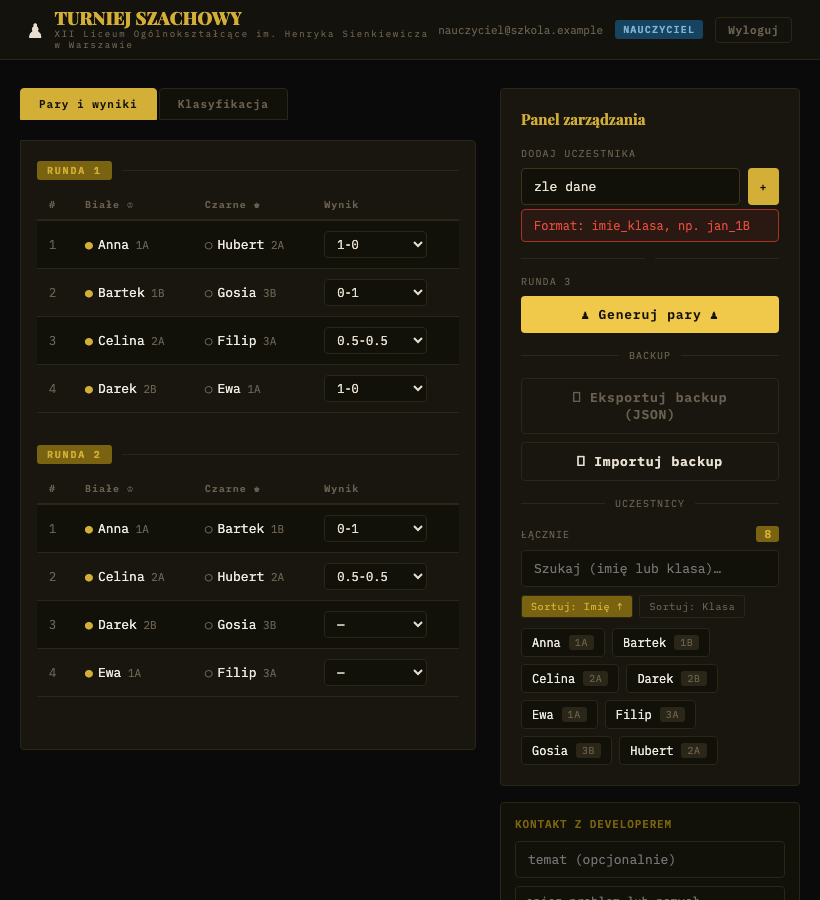
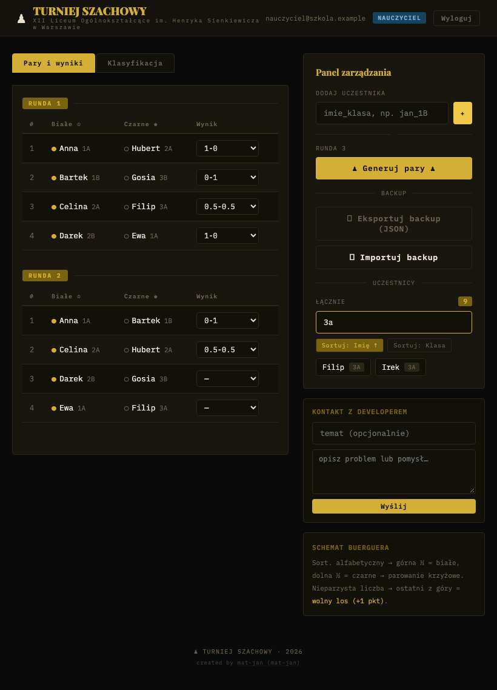
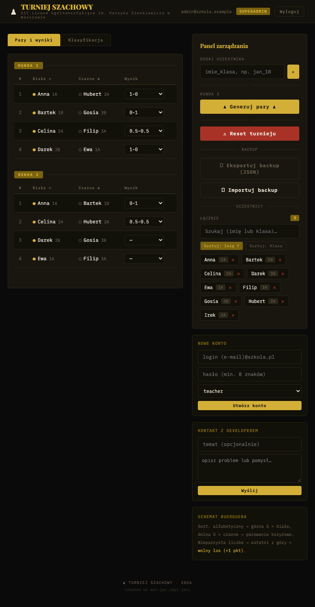
Widok na telefonie (szerokość 390 px):
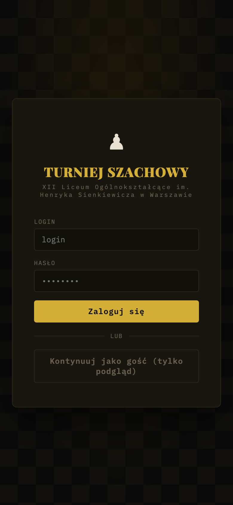
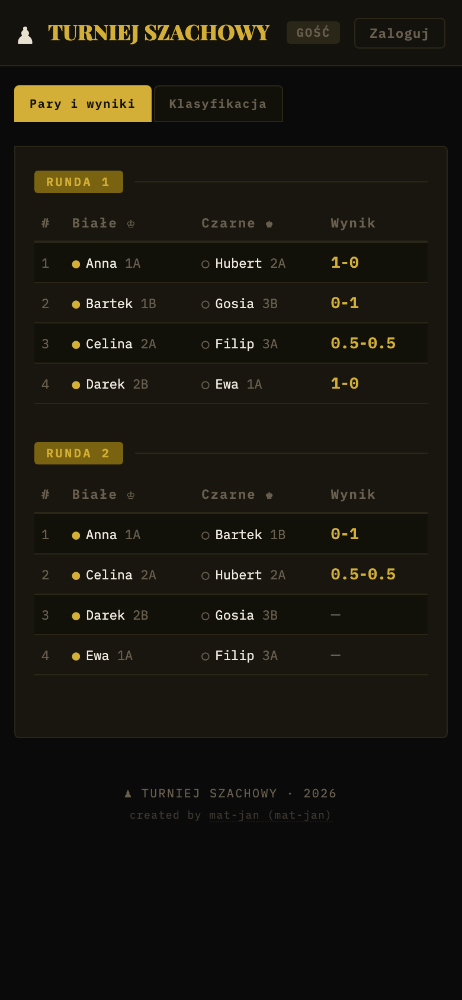
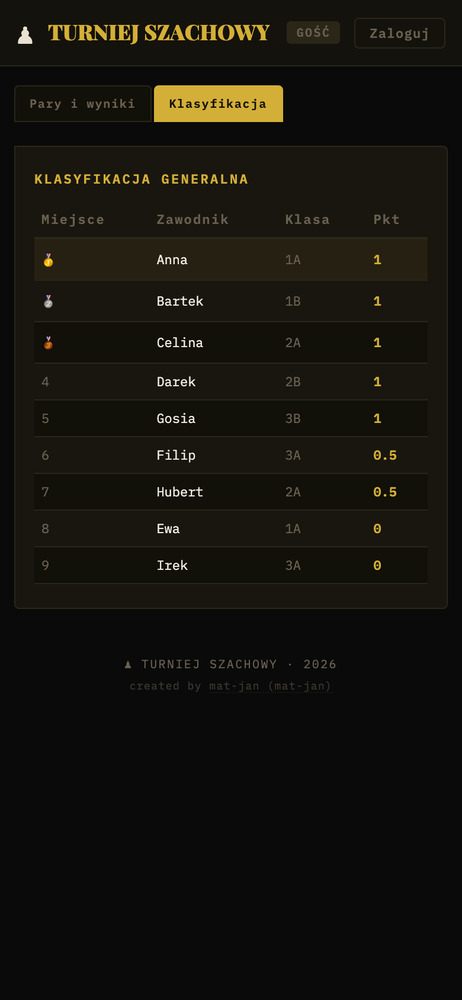
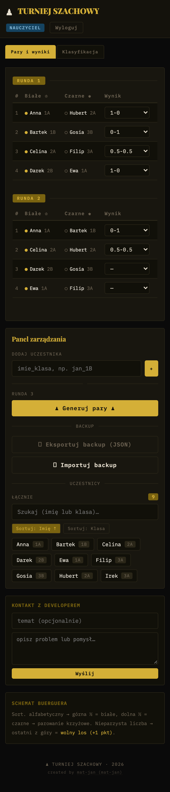
3. Jak z tego korzystać
Gość
Na ekranie logowania kliknij „Kontynuuj jako gość”. Zakładka „Pary i wyniki” pokazuje rundy po kolei, zakładka „Klasyfikacja” ranking. Przycisk „Zaloguj” w nagłówku wraca do logowania.
Nauczyciel i superadmin
Wpisz login (w praktyce adres e-mail konta) i hasło. Po zalogowaniu pojawia się panel zarządzania.
- Dodaj uczestników w polu „Dodaj uczestnika”, w formacie
imie_klasa, np.jan_1B. Klasa to część po ostatnim znaku_. - Gdy jest co najmniej dwóch uczestników, kliknij „Generuj pary”. Numer rundy to największy dotychczasowy numer plus jeden.
- Wybierz wynik z listy przy każdej parze. Zapisuje się od razu po wybraniu.
- Wyniki widać w zakładce „Klasyfikacja”.
Wyniki do wyboru: 1-0 (wygrały białe), 0-1 (wygrały czarne), 0.5-0.5 (remis), wolny los oraz puste. Wolny los daje 1 punkt, a remis po pół punktu każdemu.
Backup: „Eksportuj backup (JSON)” pobiera plik z uczestnikami i parami. „Importuj backup” dodaje zawartość pliku do istniejących danych, niczego nie kasuje, i przed importem pyta o potwierdzenie.
Lista uczestników ma szukajkę (po imieniu lub klasie) i sortowanie po imieniu albo klasie.
Tylko superadmin: usuwanie uczestników krzyżykiem, „Reset turnieju” (kasuje wszystkie pary i wszystkich uczestników, po potwierdzeniu) oraz „Nowe konto”.
| Formularz | Pole | Opis |
|---|---|---|
| Logowanie | Login | adres e-mail konta w Supabase Auth |
| Logowanie | Hasło | hasło konta |
| Dodaj uczestnika | imie_klasa | tekst w formacie imie_klasa, np. jan_1B |
| Nowe konto | login (e-mail) | adres e-mail nowego konta |
| Nowe konto | hasło | co najmniej 8 znaków |
| Nowe konto | rola | teacher lub superadmin |
| Kontakt z developerem | temat | opcjonalny, obcinany do 100 znaków |
| Kontakt z developerem | wiadomość | wymagana, do 1500 znaków (limit w polu) |
Formularz „Kontakt z developerem” widzą nauczyciele i superadmini. Wysyła wiadomość na webhook Discorda skonfigurowany przy wdrożeniu. W aplikacji jest odstęp 30 sekund między wiadomościami.
4. Jak to jest zbudowane
Przeglądarka (React + Vite)
|-- odczyt/zapis tabel ----------> Supabase (PostgREST + RLS)
|-- logowanie -------------------> Supabase Auth
|-- tworzenie kont --------------> Edge Function create-user (service_role)
|-- kontakt ---------------------> webhook Discorda| Warstwa | Technologia |
|---|---|
| Frontend | React 18, Vite 5, jeden plik App.jsx ze stylami w kodzie |
| Dane i logowanie | Supabase (Postgres, Auth, Row Level Security), klient @supabase/supabase-js |
| Tworzenie kont | Edge Function create-user (Deno, TypeScript) |
| Parowanie | pairing.js, czyste funkcje bez zależności |
| Testy | Vitest |
| Hosting | Vercel (według README) |
Logika parowania i liczenia punktów jest w app/frontend/pairing.js, formularz kontaktowy w contact.js, schemat bazy w app/supabase/schema.sql.
Model danych:
| Tabela | Kolumny | Uwagi |
|---|---|---|
profiles | id (uuid, klucz do auth.users), email, role, created_at | role to teacher albo superadmin |
participants | id, imie (do 100 znaków), klasa (do 20), created_at | |
pairs | id, round_number, white_id, black_id (może być pusty), result, created_at | klucze obce do participants z kasowaniem kaskadowym |
Parowanie działa tak: uczestnicy sortowani alfabetycznie, pierwszy zostaje na miejscu, reszta obraca się o numer rundy minus jeden. Górna połowa dostaje białe, dolna czarne. Przy nieparzystej liczbie uczestników jedna osoba dostaje wolny los.
5. Bezpieczeństwo
Poniżej tylko to, co wynika z kodu i skryptów SQL w repozytorium. Zachowanie polityk RLS i ograniczeń sprawdziłem zapytaniami do lokalnej bazy Supabase z tym samym schematem (patrz sekcja 7). Produkcyjnej bazy nie dotykałem.
| Zagrożenie | Zabezpieczenie |
|---|---|
| Gość zapisuje lub zmienia dane | Włączone RLS. Zapis do participants i pairs wymaga roli teacher lub superadmin w tabeli profiles. Rola jest sprawdzana w bazie, nie w przeglądarce. |
| Nauczyciel usuwa dane | Kasowanie uczestników i par dozwolone w polityce tylko dla superadmin. |
| Nauczyciel zmienia sobie rolę | Brak polityk insert/update/delete na profiles dla klienta. Konta zakłada wyłącznie Edge Function. |
| Obcy zakłada konta | Edge Function sprawdza token wywołującego i jego rolę (musi być superadmin), wymaga hasła co najmniej 8 znaków i usuwa konto Auth, jeśli zapis profilu się nie uda. |
Klucz service_role w przeglądarce | Występuje tylko w Edge Function, pobierany ze zmiennych środowiska Supabase. We froncie jest wyłącznie klucz anon. |
| Duplikaty par i niepoprawne wyniki | Opcjonalna migracja 001_integrity.sql dodaje indeksy unikalne i ograniczenia na wynik. Trzeba ją uruchomić ręcznie. |
| Wstrzyknięcie znaczników w treść | React domyślnie escapuje wyświetlane teksty. W kodzie nie ma dangerouslySetInnerHTML. |
| Pingi z formularza kontaktowego | Ładunek dla Discorda ma allowed_mentions: { parse: [] }, a długości pól są obcinane. |
| Sekrety w repozytorium | .env jest w .gitignore. W repozytorium jest tylko .env.example z przykładowymi wartościami. |
Zależności produkcyjne: npm audit --omit=dev nie znalazł podatności. Pełny npm audit zgłasza 6 podatności (3 umiarkowane, 1 wysoka, 2 krytyczne) w łańcuchu narzędzi testowych (Vitest, między innymi tinypool). Nie trafiają one do zbudowanej aplikacji.
6. Środowiska i wdrożenie
Produkcyjnie aplikacja (gałąź main) stoi na Vercelu i Supabase z katalogiem głównym app/frontend. Potrzebne zmienne: VITE_SUPABASE_URL i VITE_SUPABASE_ANON_KEY (wbudowywane w czasie budowania, po zmianie trzeba przebudować) oraz opcjonalnie DISCORD_WEBHOOK_URL.
Kroki konfiguracji bazy opisuje README: uruchomić schema.sql w SQL Editorze Supabase, ręcznie założyć pierwszego superadmina (użytkownik w Auth plus wiersz w profiles), wdrożyć funkcję supabase functions deploy create-user, opcjonalnie uruchomić 001_integrity.sql.
Lokalnie:
cd app/frontend
cp .env.example .env # uzupełnij danymi z Supabase
npm ci && npm run dev
npm test && npm run buildWariant z własnym backendem FastAPI i PostgreSQL na VPS jest w osobnej gałęzi vps. Ta dokumentacja go nie opisuje.
7. Testy
Uruchomiłem npx vitest run w katalogu app/frontend. Wynik: 2 pliki, 9 testów, wszystkie zaliczone, czas około 0,2 s. Zrzuty ekranu powstały w osobnym skrypcie i nie są testami.
| Rodzaj | Plik | Liczba testów | Wynik |
|---|---|---|---|
| Jednostkowe: parowanie i punkty | pairing.test.js | 5 | zaliczone |
| Jednostkowe: wiadomość kontaktowa | contact.test.js | 4 | zaliczone |
| Interfejs (komponenty, przeglądarka) | brak | 0 | nie ma w projekcie |
| Reguły RLS na bazie | brak | 0 | nie ma w projekcie |
| Edge Function | brak | 0 | nie ma w projekcie |
Zbudowanie aplikacji (vite build) przeszło bez błędów.
Osobno sprawdziłem ręcznie, zapytaniami HTTP do lokalnego Supabase (konta demonstracyjne teacher i superadmin), jak zachowuje się baza. To nie są testy automatyczne w repozytorium.
| Próba | Wynik |
|---|---|
| Gość dodaje uczestnika | odrzucone (401) |
| Nauczyciel dodaje uczestnika | przyjęte (201) |
| Nauczyciel kasuje uczestników | nic nie usunięto (0 wierszy) |
| Nauczyciel zmienia sobie rolę na superadmin | nic nie zmieniono (0 wierszy) |
Gość czyta profiles | pusta lista |
Nauczyciel czyta profiles | widzi tylko własny wiersz |
Gość czyta participants | dane widoczne |
Para z wynikiem xyz (po migracji 001_integrity.sql) | odrzucona przez ograniczenie pairs_result_valid |
| Logowanie w interfejsie, dodanie 8 uczestników, dwie rundy, wpisanie wyników | działa, wyniki zapisane w bazie |
8. Ograniczenia i dalszy rozwój
- Edge Function
create-usernie została uruchomiona. Lokalnemu środowisku Docker zabrakło miejsca na obraz edge-runtime, więc tworzenie kont i jego zabezpieczenia znam tylko z czytania kodu. - Sprawdzałem lokalną kopię Supabase (ten sam schemat i migracje), a nie produkcyjny projekt na Vercelu i Supabase. Ustawienia produkcyjne (np. czy migracja
001_integrity.sqljest tam wgrana, konfiguracja Auth) mogą się różnić. - Nie testowałem na prawdziwym telefonie, tylko w oknie przeglądarki o szerokości 390 px. Formularz kontaktowy nie był uruchamiany, bo lokalnie nie ma webhooka.
- Adres webhooka Discorda trafia do kodu strony (zmienna jest wystawiona przez Vite), więc każdy, kto otworzy stronę, może go odczytać i wysyłać na niego wiadomości. Ukrycie formularza dla gości tego nie zmienia. Odstęp 30 s jest sprawdzany tylko w przeglądarce. W razie nadużyć trzeba wygenerować webhook od nowa.
- Migracja
001_integrity.sqljest opcjonalna. Bez niej baza nie blokuje duplikatów par ani niepoprawnych wartości wyniku, a numer rundy liczy przeglądarka, więc dwóch nauczycieli generujących pary jednocześnie może dostać zdublowaną rundę. - Tryb gościa działa tylko w przeglądarce, ale dane i tak są publiczne: polityki
selectpozwalają czytać uczestników i pary każdemu, kto ma kluczanon. - Metoda parowania to schemat Buergera (każdy z każdym). Kolejne rundy po pełnym obiegu zaczynają się powtarzać, a aplikacja tego nie blokuje.
- Brak testów interfejsu, testów RLS i testów Edge Function.
- Import backupu wstawia rekordy po jednym, więc przy dużych plikach trwa i może zostać przerwany w połowie.
- Nazwa szkoły jest wpisana w kodzie, a interfejs jest tylko po polsku.